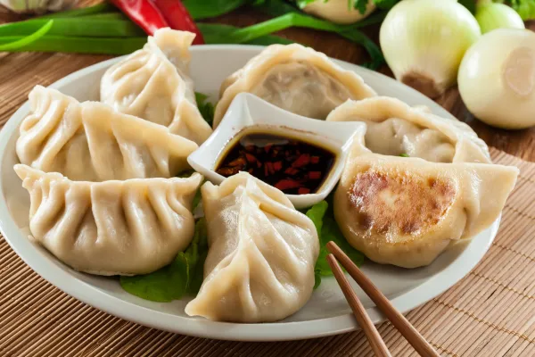

Receta de Dumplings chinos
Introducción:

Los dumplings son normalmente masas rellenas de diversos ingrediantes
como: carne molida, maíz, crema... etc.
La receta de esta web será del Dumpling chino, le pondremos enlaces
para que les haga click y pueda entrar ha ver los contenidos de esta receta.
Ingredientes necesarios:
Estos son los ingredientes que utilizamos en mi familia, obviamente que se puede
escoger el relleno deseado y conforme a los gustos de cada uno.